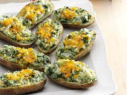

Matt's Cheesy Spinach Potatoes
Or a culinary journey into cooking's heart of darkness

Matt's Cheesy Spinach Potatoes fresh out of the oven
Today we are going to be making Matt's famous cheesy spinach potatoes. These potatoes are mind blowingly delicious despite their simplicity. Pair them with ribeyes, fillets or other red meat dishes and you'll be in heaven, quite literally! Before we begin, let's first see what ingredients we will need.
- 2 lbs Russet Potatoes
- 8 oz fresh spinach
- 1 head garlic
- 8 oz shredded cheddar cheese
- salt and pepper
- olive oil
Now that we have the ingredients, let's begin!
- Peel and chop garlic. Put aside for later
- Wash and cube potatoes
- Preheate a large castiron pan to medium high heat
- Add olive oil and cook potatoes until they are browned
- Turn down heat to medium, add garlic and cook for several minutes.
- Add cheddar cheese. Let cheese melt and then stir until potatoes are coated
- Continue cooking the cheese until it becomes crispy
- Turn off heat and add spinach. Stir in spinach until it is evenly wilted.
Take off of the stove, let cool, serve and enjoy!